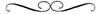

“Vì sự khôn ngoan đời này trước mặt Đức Chúa Trời là sự dại dột.”
Thánh Kinh Tân Ước, 1 Côrinhtô, 3:19

Madelyne bị kẹp giữa Duncan và em trai hắn khi họ thực hiện cuộc tấn công bất ngờ. Binh lính bao quanh họ, những tấm khiên được giơ lên. Dù Madelyne không cần được bảo vệ như thế, cả Duncan lẫn Gilard đều phạt hết các nhánh cây có thể sẽ hất nàng rớt xuống đất, dùng những chiến khiên tròn như hàng rào bảo vệ họ khỏi những nhánh cây xương xẩu chìa ra trên đường đi.
Khi binh lính đến dải đất hẹp trên ngọn đồi cao nơi Duncan đã chọn cho cuộc chạm trán, Duncan giật mạnh dây cương và quát lớn mệnh lệnh cho con ngựa. Nó đứng lại ngay lập tức. Duncan dùng bàn tay còn tự do giữ chặt hàm của Madelyne. Hắn gia tăng áp lực buộc nàng phải nhìn hắn.
Đôi mắt xám thách thức đôi mắt xanh dương. “Đừng có mà rời khỏi chỗ này.”
Hắn thả nàng ra nhưng Madelyne níu lấy tay hắn. “Nếu anh chết, tôi sẽ không khóc cho anh đâu,” nàng thì thầm.
Hắn thực sự mỉm cười với nàng. “Có, cô sẽ khóc,” hắn trả lời nàng, vừa kiêu ngạo lại vừa dịu dàng.
Madelyne không có thời gian trả lời hắn. Duncan thúc ngựa di chuyển và đua đến trận chiến đã diễn ra dưới kia. Madelyne đột ngột chỉ còn lại một mình trên đỉnh đồi trơ trụi khi những người lính cuối cùng của Duncan phóng qua mặt nàng với tốc độ kinh hồn.
Âm thanh vang vọng làm choáng người. Tiếng kim loại chạm vào nhau với cường độ chói tai. Tiếng thét đau đớn hòa lẫn với tiếng hét chiến thắng. Madelyne không đứng đủ gần để thấy mặt từng người nhưng nàng vẫn nhìn theo phía sau Duncan. Hắn cưỡi con ngựa xám rất dễ nhận ra. Nàng thấy hắn vung gươm cực kỳ chính xác, nghĩ rằng hắn chắc chắn đã được ban phúc lành của Chúa khi bị kẻ thù vây quanh và hắn hất văng từng người một bằng những cú chém chết người từ lưỡi gươm của hắn.
Madelyne nhắm mắt lại trong chốc lát. Khi nàng lại nhìn cảnh tượng trước mặt, con ngựa xám đã biến mất. Nàng điên cuồng đưa mắt tìm kiếm Duncan, và cả Gilard, nhưng nàng không thấy cả hai người bọn họ. Cuộc chiến đang tiến đến chỗ nàng.
Nàng không tìm kiếm anh trai nàng, vì biết rõ gã sẽ không ở trong trận chiến hỗn loạn này. Louddon, không như Duncan, sẽ là người cuối cùng vung gươm của gã. Có quá nhiều nguy hiểm xung quanh. Phải, gã đánh giá rất cao mạng sống của mình, trong khi Duncan dường như không coi trọng sự sống chút nào. Louddon để mặc việc chiến đấu cho những người trao cho gã lòng trung thành của họ. Và nếu cuộc chiến tiến về phía gã thì gã sẽ là người đầu tiên bỏ chạy.
“Đây không phải là cuộc chiến của tôi,” Madelyne thét lên hết sức. Nàng kéo dây cương, nhất định rời khỏi với tốc độ càng nhanh càng tốt. Nàng sẽ không chứng kiến cảnh tượng này thêm giây phút nào nữa. Đúng, nàng sẽ mặc kệ tất cả bọn họ.
“Đi, Silenus, giờ chúng ta đi thôi,” nàng nói, thúc vào con ngựa theo cái cách mà nàng thấy Duncan làm, con ngựa chẳng thèm nhúc nhích. Nàng giật mạnh dây cương, quyết tâm bắt con vật tuân lệnh nàng. Những người lính nhanh chóng trèo lên đồi và sự gấp rút bỗng trở nên cấp bách.
Duncan đang tức điên lên. Hắn đã tìm kiếm nhưng không thể tìm được dấu vết của Louddon. Chiến thắng kẻ địch sẽ trở thành thực tế rỗng tuếch nếu kẻ chỉ huy của chúng lại trốn thoát. Hắn đưa mắt nhìn lên Madelyne và giật mình khi thấy trận chiến đang vây quanh nàng. Duncan nhận ra hắn đã tiêu phí thời gian để tìm Louddon mà không xem xét đến an toàn của Madelyne. Hắn thừa nhận hắn phạm sai lầm, tự nguyền rủa bản thân vì không lo xa trong việc nên để lại vài người lính bảo vệ nàng.
Duncan ném tấm khiên xuống đất và bật ra một tiếng huýt sáo chói tai hy vọng con ngựa chiến của hắn nghe thấy được. Tim hắn nhảy tưng lên cổ họng khi hắn chạy về phía đỉnh đồi. Đó là một phản ứng logic, hắn tự nhủ, nhu cầu mãnh liệt này là bảo vệ Madelyne, vì nàng là tù nhân của hắn, và hắn có trách nhiệm giữ an toàn cho nàng. Đúng vậy, đó là lý do mà giờ khiến hắn chạy đến chỗ nàng, với tiếng gầm giận dữ mạnh mẽ như tiếng thét xung trận.
Con ngựa chiến đáp lại tín hiệu huýt sáo, xông về phía trước. Con vật giờ cho phép Madelyne điều khiển nó nhưng nàng lại làm rớt dây cương khi nó nhảy bổ lên.
Silenus nhảy qua đầu hai người lính chỉ vừa mới trèo lên đến đỉnh đồi, đạp lên đầu họ bằng đôi chân trước của nó. Những tiếng thét mang theo họ lăn xuống đồi.
Madelyne chẳng mấy chốc lọt thỏm trong trận chiến hỗn loạn, người và ngựa đông đúc chung quanh nàng, tất cả đang chiến đấu vì mạng sống của họ. Con ngựa của Duncan bị chặn lại. Madelyne bám chặt lấy cổ nó và cầu nguyện một cái kết thúc nhanh chóng.
Đột nhiên nàng phát hiện ra Gilard đang mở đường tiến về phía nàng. Anh ta không cưỡi ngựa, một tay nắm chặt thanh gươm đẫm máu và tay kia giữ tấm khiên nhuốm bẩn, bảo vệ khỏi bị tấn công từ bên trái trong khi anh ta đâm gươm về phía bên phải mình.
Một người lính của Louddon lao đến Madelyne, thanh gươm của anh ta giơ cao. Sự điên cuồng rực sáng trong mắt anh ta, như thể anh ta vượt qua đỉnh điểm của nhận thức rằng anh ta đang làm gì.
Anh ta có ý định giết nàng, Madelyne nhận ra. Nàng thét tên Duncan, nhưng biết sự an toàn của mình phụ thuộc vào việc nhanh trí. Không có lối thoát nào ngoài nền đất cứng, và Madelyne nhanh chóng ném mình rời khỏi lưng ngựa. Nàng không đủ nhanh. Lưỡi gươm đã đến trúng đích, chém một đường sâu dọc theo đùi trái của Madelyne. Nàng thét lên đau đớn, nhưng âm thanh tắt lịm trong cổ họng khi nàng chạm đất. Không khí bị quét sạch ra khỏi buồng phổi của nàng.
Chếc áo choàng theo nàng xuống đất, đáp xuống thành một đống trên vai nàng. Sửng sốt và trong tình trạng gần như sốc khủng khiếp, Madelyne thốt nhiên tập trung vào việc kéo áo xống quanh người nàng, một quá trình chậm và khó khăn mà nàng bị ám ảnh phải hoàn thành. Ban đầu cơn đau ở đùi nàng kéo dài đến nỗi nàng nghĩ nàng sẽ chết vì nó. Và rồi một sự tê liệt quỷ quái định cư ở đùi nàng và trong tâm trí nàng, cho Madelyne một sức mạnh mới. Nàng đứng lên, cảm giác mê muội và rối bời, chộp lấy áo khoác che trước ngực khi nàng nhìn những người đàn ông đang chiến đấu quanh nàng.
Con ngựa chiến của Duncan huých nhẹ vào vai Madelyne, suýt nữa đẩy nàng ngã ngửa ra đất. Nàng lấy lại thăng bằng và tựa vào một bên con ngựa, tìm thấy sự an ủi trong việc nó không chạy đi khi nàng bị ngã. Silenus giờ như một tấm chắn bảo vệ nàng khỏi sự tấn công.
Nước mắt chảy thành dòng trên mặt nàng, một phản ứng không chủ tâm đối với mùi chết chóc đang tràn ngập trong không khí. Gilard hét lên cái gì đó với nàng nhưng Madelyne không thể hiểu anh ta đang hét gì. Nàng chỉ có thể thấy anh ta tiếp tục mở lối về phía nàng. Anh ta lại hét lên với giọng mạnh hơn nhưng mệnh lệnh đó hòa lẫn với tiếng va chạm của kim loại và trở nên lẫn lộn không thể hiểu.
Tâm trí nàng nổi loạn với sự chém giết. Nàng bắt đầu đi đến chỗ Gilard, tin rằng đó là điều anh ta muốn nàng làm. Nàng vấp ngã hai lần bởi những cái chân và cánh tay của những chiến binh bị giết nằm ngổn ngang trên mặt đất, suy nghĩ của nàng chỉ hướng về Gilard, người đàn ông duy nhất nàng nhận ra trong khu rừng của sự hủy diệt này. Tận sâu trong nàng là niềm hy vọng rằng anh ta sẽ mang nàng đến với Duncan. Và sau đó nàng sẽ được an toàn.
Madelyne chỉ còn cách Gilard vài bước chân khi anh ta bị tấn công từ đằng sau. Anh ta đang đối đầu với đối thủ mới, sau lưng không được bảo vệ. Madelyne thấy một người lính khác của Louddon chộp lấy cơ hội, vung cao thanh gươm sẫm màu trong không trung khi hắn ta nhanh chóng lao đến mục tiêu dễ tấn công.
Nàng cố thét lên cảnh báo nhưng giọng nàng đã rời bỏ nàng và chỉ có mỗi tiếng rên rỉ thoát ra.
Lạy Chúa, nàng là người duy nhất đủ gần để giúp Gilard, người duy nhất có thể tạo ra một điều gì khác. Madelyne không ngần ngừ. Nàng chộp lấy một loại vũ khí nào đó từ những ngón tay cứng đờ của một xác chết vô danh. Đó là một cái chùy to, nặng nề, dày cui với những cái gai nhọn đính đầy máu khô.
Madelyne cầm vũ khí bằng cả hai tay, loạng choạng bởi sức nặng của nó. Nắm chặt lấy cái chuôi, nàng nửa kéo nửa vác vũ khí khi nàng vội vã đến phía sau Gilard, lưng nàng gần như chạm vào lưng anh ta. Và rồi nàng chờ kẻ địch thực hiện vụ tấn công của hắn ta.
Người lính không nhụt chí, vì Madelyne có vẻ là hàng phòng thủ quá yếu ớt đối với áo giáp và sức mạnh của hắn ta. Một nụ cười mơ hồ hiển hiện trên mặt hắn ta. Với một tiếng hét thách thức, hắn ta lao đến trước, thanh gươm dài, cong cong của hắn ta vung ngang trong không trung với ý định giết người quá rõ ràng.
Madelyne chờ đến đúng thời điểm và nàng vung cái chùy khỏi mặt đất thành một vòng cung rộng. Sự kinh hoàng cho nàng mượn sức mạnh. Nàng chỉ có ý ngăn cản sự tấn công của hắn ta, nhưng những cái gai nhọn lồi ra từ đầu chùy cắt đứt những sợi dây xích nối áo giáp và đâm vào lớp da thịt được che đậy bên dưới áo giáp.
Gilard kết thúc trận đấu tấn công trực diện của anh, nhanh chóng quay lại trong nỗ lực giúp Madelyne, và suýt nữa húc ngã nàng. Anh quay lại đúng lúc để nhìn thấy cảnh Madelyne vừa làm, tên lính địch ngã xuống đất với tiếng thét nghẹn lại trong cổ họng và những cái gai nhọn xuyên vào giữa thân hình hắn ta. Gilard quá kinh ngạc với những gì anh vừa chứng kiến, trong giây lát anh không nói được lời nào.
Madelyne bật ra tiếng rên đau đớn. Nàng siết chặt tay trước eo và cúi gập người lại. Gilard nghĩ nàng có thể đã bị thương. Anh tìm cách giúp nàng, vươn người tới trước và dịu dàng chạm vào vai nàng.
Madelyne quá sợ hãi với sự ghê rợn nàng vừa gây ra, nàng thậm chí không nhận ra Gilard nữa. Trận chiến không còn tồn tại với nàng.
Duncan cũng chứng kiến cảnh tượng ấy. Bằng một động tác mau lẹ, hắn cưỡi lên con ngựa chiến và thúc nó đến chỗ Gilard. Người em trai nhảy dựng lên tránh đường ngay khi Duncan cúi xuống và ôm lấy Madelyne. Hắn nhấc nàng lên ngựa bằng một cánh tay mạnh mẽ và đặt nàng lên yên trước. Chúa nhân từ, vì bên phải nàng bị tác động và cái đùi bị thương của nàng lại nhận thêm áp lực.
Trận chiến gần như kết thúc. Lính của Duncan đang đuổi theo lực lượng rút lui của Louddon xuống thung lũng.
“Kết thúc đi,” Duncan hét lên với Gilard. Hắn giật dây cương, điều khiển ngựa chạy lên đỉnh đồi lại. Con ngựa phi khỏi chiến trường, giờ thì giống nòi và sức mạnh của nó rõ ràng được thể hiện với một tốc độ di chuyển đáng kinh ngạc trên địa hình nguy hiểm.
Duncan đã bỏ áo khoác và khiên của hắn trong cuộc chiến. Bây giờ hắn dùng đôi bàn tay bảo vệ khuôn mặt của Madelyne khỏi những nhánh cây chìa ra trên đường.
Nàng không muốn nhận chăm sóc chu đáo của hắn. Madelyne đẩy vào người hắn, cố gắng để hắn thả nàng ra, thà rớt xuống mặt đất cứng hơn là nhận lấy sự đụng chạm đáng ghét của hắn.
Bởi vì hắn mà nàng đã giết một người đàn ông.
Duncan không cố làm dịu nàng. An toàn là mối bận tâm duy nhất bây giờ của hắn. Hắn không từ bỏ tốc độ nước kiệu cho đến khi họ hoàn toàn tránh xa các mối nguy hiểm. Cuối cùng hắn cũng giật cương kềm con ngựa chiến dừng lại khi họ đi vào một lùm cây. Ở đó kín đáo và cũng được bảo vệ.
Hắn đang cáu tiết với bản thân vì đã đặt Madelyne vào vòng nguy hiểm như thế. Duncan nhìn nàng. Khi hắn thấy nước mắt chảy ròng ròng trên má nàng, hắn tuôn ra một tiếng rên khó chịu.
Và rồi hắn tìm cách làm dịu nàng. “Cô có thể thôi khóc được rồi, Madelyne. Anh trai cô không nằm trong số những người chết. Tiết kiệm nước mắt của cô đi.”
Nàng thậm chí không nhận ra là nàng đang khóc. Khi giọng hắn vang lên, Madelyne trở nên nổi giận vì sự hiểu lầm của hắn, nàng gần như không thể trả lời. Tên đàn ông đáng khinh.
Madelyne lau sạch nước mắt trên má, hít thật sâu, gom góp không khí trong lành và cho cơn thịnh nộ mới bùng nổ. “Tôi không biết sự căm ghét thật sự là gì cho đến ngày hôm nay, Nam tước. Nhưng anh đã đưa cho tôi cái từ tồi tệ đó một ý nghĩa mới. Có Chúa chứng giám, tôi sẽ căm ghét anh đến ngày tôi chết. Tôi cũng có thể bị đày xuống địa ngục và tất cả là tại vì anh.” Giọng nàng thấp đến nỗi Duncan phải ngả người về phía trước chạm trán hắn vào trán Madelyne chỉ để nghe được lời nàng nói.
Nàng nói vô nghĩa làm sao.
“Cô không nghe ta nói à?” Dù hắn giữ giọng nhẹ như nàng thì hắn vẫn cảm thấy sự căng thẳng trên đôi vai nàng, biết là nàng gần như mất hết kiểm soát và cố làm dịu nàng lại. Hắn muốn dịu dàng với nàng, một phản ứng khác thường với lối suy nghĩ của hắn, nhưng hắn tự tha thứ cho mình bằng cách tự nhủ rằng đó chỉ là bởi vì hắn cảm thấy có trách nhiệm với nàng mà thôi. “Ta vừa giải thích là anh trai cô an toàn, Madelyne. Tạm thời thôi,” hắn nói thêm, quyết định nói thật cũng như an ủi nàng.
“Anh mới là người không nghe tôi nói,” Madelyne phản bác. Nước mắt bắt đầu rơi, cắt ngang câu nói của nàng. Nàng dừng lại, gạt đi. “Vì anh mà tôi đã cướp đi mạng sống của một người. Đó là một tội lỗi nghiêm trọng và anh cũng phải chịu trách nhiệm nhiều như tôi vậy. Nếu anh không kéo tôi đi cùng anh, tôi đã không phải giết ai cả.”
“Cô khó chịu vì đã giết người?” Duncan hỏi, không thể loại sự kinh ngạc ra khỏi giọng nói. Duncan tự nhắc nhở rằng Madelyne chỉ là một phụ nữ, và những điều lạ lẫm nhất dường như đều làm phái yếu khó chịu. Hắn cũng cân nhắc đến tất cả những gì hắn đặt lên vai Madelyne trong suốt hai ngày qua. “Ta còn giết nhiều người hơn đấy chứ,” hắn nói cốt yếu để làm nàng thanh thản.
Kế hoạch của hắn thất bại. “Tôi không thèm quan tâm anh đã giết bao nhiêu quân đoàn lính,” Madelyne tuyên bố. “Anh không có linh hồn, vì thế nó không thành vấn đề khi anh đã cướp đi bao nhiêu mạng sống.”
Duncan không có sẵn câu trả lời cho lời tuyên bố đó. Hắn nhận ra tranh cãi với nàng thật vô nghĩa. Madelyne quá quẫn trí để có thể suy nghĩ logic, và chắc chắn nàng đã kiệt sức. Tại sao ư, nàng quá khó chịu, nàng thậm chí còn không lên giọng với hắn nữa.
Duncan bế nàng trong đôi cánh tay của hắn, siết chặt cho đến khi nàng ngừng không vật lộn nữa. Với một tiếng thở dài mệt mỏi hắn thì thầm, với chính hắn hơn là với nàng, “Ta làm gì với em đây?”
Madelyne nghe thấy hắn nói và câu trả lời của nàng rất nhanh. “Tôi không quan tâm anh làm gì với tôi.” Nàng ngửa đầu ra sau và nhìn lên hắn. Madelyne để ý thấy một vết cắt lởm chởm ngay dưới mắt phải của Duncan. Nàng dùng cổ tay áo của mình lau sạch dòng máu đi, nhưng nàng lại phủ nhận hành động dịu dàng đó bằng những lời tức giận. “Anh có thể để tôi ở đây, hoặc anh có thể giết tôi,” nàng thông báo khi nàng chấm chấm nhè nhẹ lên miệng vết cắt. “Không có gì anh làm tạo ra khác biệt nào với tôi cả. Lẽ ra anh không nên đưa tôi đi cùng anh, Duncan.”
“Anh trai cô đuổi theo cô,” Duncan chỉ ra.
“Anh ấy không,” Madelyne phủ nhận. “Anh ấy đuổi theo anh vì anh đã phá hủy nhà của anh ấy. Anh ấy không quan tâm đến tôi. Nếu anh chịu cởi mở, tôi biết tôi có thể thuyết phục anh hiểu sự thật. Nhưng anh quá cứng đầu để lắng nghe bất kỳ ai. Tôi thấy là nói chuyện với anh thật vô nghĩa. Đúng, thật vô nghĩa! Tôi thề tôi sẽ không bao giờ nói chuyện với anh nữa.”
Tràng đả kích dữ dội lấy đi nốt chút sức lực cuối cùng của nàng. Madelyne kết thúc việc làm sạch chỗ trầy da của hắn tốt nhất mà nàng có thể và rồi hạ người tì vào ngực hắn, gạt bỏ hắn qua một bên.
Tiểu thư Madelyne khác biệt với những phụ nữ khác. Duncan gần như chết giấc bởi cái cách tay nàng dịu dàng chạm vào mặt hắn khi nàng cố chăm sóc vết thương cho hắn. Duncan nghĩ nàng không nhận thức được điều nàng đang làm. Đột nhiên hắn nhớ lại việc Madelyne đã đối mặt với Gilard như thế nào khi ở trong pháo đài của Louddon. Đúng thế, nàng cũng là người mâu thuẫn. Madelyne đã trao cho Gilard một vẻ ngoài điềm tĩnh trong khi cậu ta hét toáng lên thất vọng, tuy vậy trong lúc đó nàng lại bấu chặt lấy tay Duncan.
Giờ thì nàng lại mắng mỏ hắn trong khi chăm sóc hắn. Duncan thở dài lần nữa. Hắn tựa cằm lên đỉnh đầu Madelyne và tự hỏi làm thế nào mà Chúa lại để một phụ nữ dịu dàng như vầy lại có quan hệ huyết thống với một tên quỷ dữ cơ chứ.
Tình trạng tê liệt giảm dần. Cơn giận dữ dâng cao đã rời bỏ nàng, đùi Madelyne bắt đầu rung lên đau đớn. Áo choàng của nàng che vết thương khỏi mắt của Duncan. Nàng tin là hắn không biết việc nàng bị thương và thấy thỏa mãn một cách ngang ngạnh vì thực tế ấy. Đó là một phản ứng phi lý nhưng Madelyne dường như không thể nghĩ ra nhiều lý do được. Đột nhiên nàng cảm thấy rất mệt, rất đói, và trong cơn đau như thế, nàng không thể suy nghĩ gì cả.
Những người lính gia nhập cùng chỉ huy của họ và trong vài phút họ lại tiếp tục hướng về pháo đài Wexton. Một giờ sau đó là quyết tâm gan góc giữ cho Madelyne không cất tiếng kêu rên.
Bàn tay Duncan vô tình chạm vào vết thương của nàng. Áo choàng và váy là miếng đệm nhỏ tránh cho nàng khỏi cơn đau đang thiêu cháy. Madelyne giữ chặt tiếng thét. Nàng đẩy tay hắn ra nhưng ngọn lửa từ cái đụng chạm của hắn vẫn còn nán lại, làm nóng bừng vết thương của nàng hết sức đau đớn.
Madelyne biết nàng sắp nôn. “Chúng ta phải dừng lại một chút,” nàng nói với Duncan. Nàng muốn quát vào mặt hắn, cũng muốn khóc nữa, nhưng nàng đã thề sẽ không để hắn phá hỏng tính cách dịu dàng của nàng.
Madelyne biết hắn nghe thấy nàng. Cái gật đầu của hắn báo cho nàng biết hắn có nghe, nhưng họ vẫn tiếp tục cưỡi ngựa, và sau đó thêm vài phút nàng kết luận hắn đã quyết định lờ đi yêu cầu của nàng.
Hắn là quái vật không có tính người làm sao! Dù nó mang lại cho nàng chút an ủi thì nàng vẫn thầm liệt kê tất cả các cái tên xấu xa mà nàng muốn hét vào mặt hắn. Nàng nhủ thầm từng từ xấu xa mà nàng có thể nhớ, dù vốn liếng về những từ ngữ thô thiển của nàng có giới hạn. Nó thỏa mãn nàng, cho đến khi nàng nhận ra nàng có lẽ đang trở nên thấp hơn vị trí của Duncan. Chết tiệt, nàng là một phụ nữ dịu dàng.
Dạ dày nàng không ổn. Madelyne nhớ là nàng thề không bao giờ nói chuyện với hắn nữa, nhưng nàng bị bắt buộc, bởi hoàn cảnh, phải lặp lại yêu cầu. “Nếu anh không dừng lại, tôi sẽ nôn ra khắp người anh.”
Lời đe dọa của nàng có hiệu quả tức thì. Duncan giơ tay, ra hiệu dừng lại. Hắn dừng ngựa và nhấc Madelyne xuống đất trước khi nàng có thể gắng hết sức để chuẩn bị tinh thần.
“Tại sao chúng ta dừng lại?” Câu hỏi phát ra từ Gilard, anh cũng đã xuống ngựa và vội vã đi tới anh trai mình. “Chúng ta sắp về đến nhà rồi.”
“Tiểu thư Madelyne,” Duncan trả lời, không cho Gilard thêm thông tin nào nữa.
Madelyne bắt đầu di chuyển một cách đau khổ về nơi kín đáo sau những thân cây, nhưng nàng dừng lại khi nghe thấy câu hỏi của Gilard. “Anh có thể đứng yên đó và đợi tôi, Gilard.”
Nghe có vẻ như một mệnh lệnh. Gilard nhướng cao một bên chân mày trong sự ngạc nhiên, nhìn anh trai mình. Duncan đang cau mày khi hắn nhìn theo Madelyne, và Gilard kết luận rằng anh trai anh bị chọc tức bởi cái cách Madelyne vừa nói với anh. “Cô ấy đã vượt qua thử thách,” Gilard vội vã bảo vệ nàng, sợ Duncan quyết định trả đũa.
Duncan lắc đầu. Hắn vẫn dõi theo Madelyne đến khi nàng khuất hẳn vào trong rừng. “Có chuyện gì không ổn,” hắn lầm bầm, nhăn mặt cố tìm ra chuyện gì đang khiến hắn lo lắng.
Gilard thở ra. “Có lẽ cô ấy bị ốm?”
“Và, và cô ấy đe dọa…” Duncan không nói dứt lời, nhưng theo sau Madelyne.
Gilard cố giữ tay anh trai mình lại. “Cho cô ấy chút riêng tư, Duncan. Cô ấy sẽ quay lại với chúng ta. Nhìn xem, chẳng có chỗ nào cho cô ấy trốn cả,” anh lập luận.
Duncan gạt tay em trai hắn ra. Hắn đã thấy sự đau đớn trong mắt Madelyne, và cũng để ý đến dáng đi cứng đơ của nàng. Bản năng mách bảo Duncan chuyện đau dạ dày không phải là nguyên nhân. Nàng sẽ không nghiêng về bên phải trong trường hợp đó. Và nếu nàng sắp sửa nôn, nàng sẽ chạy chứ không đi xa khỏi những người lính. Không, chuyện gì đó không ổn và Duncan phải tìm ra.
Hắn tìm thấy nàng đang tựa vào thân một cây sồi già, đầu cúi xuống. Duncan dừng lại, không muốn xâm phạm sự riêng tư của nàng. Madelyne đang khóc. Hắn thấy nàng chầm chậm nhấc áo choàng ra và thả rơi xuống đất. Và rồi hắn hiểu lý do thật sự cho tình trạng của nàng. Phần váy bên trái bị rách đến tận gấu và thấm đẫm máu.
Duncan không nhận ra hắn đã hét lên đến lúc Madelyne bật ra tiếng rên sợ hãi. Nàng không có sức để tránh xa hắn, cũng không chống lại hắn được khi hắn đẩy tay nàng ra khỏi đùi và quỳ xuống cạnh nàng.
Khi Duncan xem xét vết thương, hắn tràn ngập sự giận dữ, tay hắn run lên lúc hắn gỡ váy nàng ra. Máu khô khiến công việc chậm lại. Đôi tay Duncan to và vụng về và hắn cố càng dịu dàng với nàng càng tốt.
Vết thương sâu, dài gần bằng cẳng tay của hắn, và đầy vết bẩn. Nó cần phải được làm sạch và khâu lại.
“Ah, Madelyne,” Duncan thì thào cộc lốc. “Kẻ nào gây ra điều này với cô?”
Giọng hắn như một cái vuốt ve âu yếm, hiển nhiên là đầy thương cảm. Madelyne biết nàng sẽ lại khóc nếu hắn tiếp tục ân cần với nàng. Đúng vậy, sau đó sự kiểm soát của nàng sẽ gãy mất, giống như một nhánh cây giòn mà giờ nàng đang bám vào.
Madelyne không cho phép điều đó. “Tôi không muốn sự thương cảm của anh, Duncan.” Nàng ưỡn thẳng vai và cố để cho hắn thấy vẻ bề ngoài cứng cỏi. “Bỏ tay anh ra khỏi chân tôi. Nó không đứng đắn.”
Duncan bất ngờ với vẻ uy quyền của nàng, suýt nữa hắn mỉm cười. Hắn ngước lên, thấy lửa bập bùng trong đôi mắt nàng. Duncan biết những gì nàng đang cố làm. Kiêu hãnh trở thành hàng rào phòng thủ của nàng. Hắn cũng nhận thấy Madelyne coi trọng sự kiểm soát đến thế nào.
Nhìn lại vết thương của nàng, hắn biết phải làm gì đó với nó ngay. Hắn quyết định để cho Madelyne làm theo ý nàng.
Duncan buộc phải nói giọng cộc lốc khi hắn đứng lên và nhìn nàng. “Cô sẽ không có sự thương cảm từ ta đâu, Madelyne. Ta giống một con sói. Ta không chịu đựng được cảm xúc của con người.”
Madelyne không đáp lại lời hắn, nhưng đôi mắt nàng mở to kinh ngạc. Duncan mỉm cười và lại quỳ xuống.
“Để tôi yên.”
“Không,” Duncan hồi đáp với giọng nhẹ nhàng. Hắn rút dao găm và bắt đầu cắt một đường dài dọc theo váy nàng.
“Anh đang phá hỏng váy của tôi,” Madelyne lầm bầm.
“Vì Chúa, Madelyne, váy cô đã rách rồi.”
Với rất nhiều sự nhẹ nhàng có thể, hắn quấn lớp vải quanh đùi nàng, thắt nút lại và nàng chống tay lên vai hắn.
“Anh đang làm tôi đau.” Nàng ghét bản thân phải thừa nhận điều đó. Chết tiệt, nàng sắp rơi nước mắt.
“Ta không có.”
Madelyne thở hổn hển, quên béng mọi việc khóc lóc. Nàng đang tức điên lên. Sao hắn dám cãi lại nàng chứ! Nàng là người đang đau đớn cơ mà.
“Vết thương của cô phải được khâu lại,” Duncan tuyên bố.
Madelyne đập vào vai hắn khi hắn dám nhún vai cùng lời nói.
“Không ai được đâm kim vào người tôi.”
“Cô thật ngang ngược, Madelyne.” Duncan vừa nói vừa cúi xuống nhặt áo choàng của nàng lên. Hắn phủ nó lên vai nàng và rồi bế bổng nàng bằng đôi cánh tay mạnh mẽ, cẩn thận bảo vệ vết thương của nàng.
Madelyne tự động vòng tay quanh cổ hắn. Nàng ngắm nghía vết thương nơi mắt hắn bởi vì cái cách hắn đang đối xử với nàng thiệt là khủng khiếp. “Anh cũng thật ngang ngược, Duncan. Tôi là một thiếu nữ với tính tình dịu dàng mà anh cố hủy hoại nếu tôi cho anh cơ hội. Và tôi thề với Chúa, đây là lần cuối cùng tôi nói chuyện với anh.”
“À, và cô rất đáng ngưỡng mộ vì không bao giờ phá vỡ lời thề. Có đúng vậy không, tiểu thư Madelyne?” hắn hỏi nàng trong khi mang nàng quay lại chỗ người của hắn đang chờ.
“Chính xác,” Madelyne trả lời lập tức. Nàng nhắm mắt lại và tựa vào ngực hắn. “Anh có bộ não của sói, anh biết điều đó không? Và sói thì có não rất nhỏ.”
Madelyne quá mệt để nhìn lên xem hắn phản ứng thế nào trước sự sỉ nhục của nàng. Bên trong nàng nổi giận với cách hắn đối xử với nàng, và rồi nàng nhận ra nàng nên cảm ơn thái độ lạnh lùng của hắn. Tại sao à, hắn đã làm nàng tức giận đủ để quên đi cơn đau. Không kém phần quan trọng, sự thiếu quan tâm của hắn giúp nàng vượt qua nỗi thôi thúc sụp đổ và òa khóc trước mặt hắn. Đáng lẽ nàng đã vụng về khóc như một đứa trẻ, và cả nhân cách lẫn lòng kiêu hãnh của nàng luôn được nâng niu che đậy dưới lớp mặt nạ sẽ bị tổn thương. Đáng lẽ nàng đã thật nhục nhã khi mất cả hai điều đó. Madelyne cho phép nàng khẽ mỉm cười, chắc rằng Duncan không thể thấy nụ cười ấy. Hắn là tên đàn ông ngốc nghếch, vì hắn đã cứu vãn lòng kiêu hãnh của nàng mà chẳng hề biết đến điều đó.
Duncan thở dài. Madelyne vừa phá vỡ lời thề của nàng khi nàng mở miệng nói chuyện với hắn. Hắn không cảm thấy phải chỉ ra cho nàng thấy điều đó nhưng như vậy lại khiến hắn cảm thấy đang toét miệng ra cười.
Hắn muốn biết mọi chi tiết từ Madelyne, tìm hiểu tại sao nàng bị thương và ai đã gây ra. Trong tận đáy lòng hắn không thể tin người của hắn ám hại nàng, nhưng người của Louddon cũng sẽ cố bảo vệ nàng, đúng vậy không?
Duncan quyết định đợi để có câu trả lời. Hắn cần kiểm soát cơn giận dữ trước đã. Và Madelyne giờ cần được chăm sóc và nghỉ ngơi.
Thật khó để nói đùa với nàng. Duncan không phải là loại người che đậy cơn giận dữ. Khi hắn bị cư xử xấu, hắn sẽ phản công. Tuy nhiên hắn hiểu Madelyne gần như suy kiệt đến mức nào. Việc thuật lại chi tiết sẽ khiến nàng mệt mỏi hơn.
Khi họ lại tiếp tục cuộc hành trình, Madelyne thoát khỏi cơn đau, nàng rúc sát vào ngực Duncan, mặt nàng thảnh thơi nghỉ ngơi dưới cằm hắn.
Madelyne lại cảm thấy an toàn. Phản ứng của nàng đối với Duncan khiến nàng rối bời. Tận sâu trong lòng nàng thừa nhận hắn chẳng giống Louddon, dù nàng có phải chết trước khi nói với hắn điều đó. Nàng vẫn là tù nhân của hắn, xét cho cùng, là con tốt thí của hắn để chống lại anh trai nàng. Nhưng nàng không thật sự căm ghét hắn. Duncan đơn thuần là đang chống lại Louddon và nàng bị mắc kẹt ở giữa.
“Tôi sẽ trốn thoát, anh biết đấy.”
Nàng không nhận ra là nàng thốt to suy nghĩ của mình bằng lời cho đến lúc Duncan trả lời nàng. “Không đâu.”
“Cuối cùng chúng ta về nhà rồi,” Gilard hét lên. Ánh mắt anh nhìn thẳng vào Madelyne. Phần lớn khuôn mặt của nàng bị che khuất nhưng những gì anh có thể thấy là một vẻ mặt rất thanh thản. Anh nghĩ nàng có thể đang ngủ và lấy làm mừng vì điều ấy. Thực ra Gilard không biết tiếp tục đối xử với tiểu thư Madelyne như thế nào bây giờ cả. Anh đang trong một trạng thái cực kỳ lúng túng. Anh đã coi khinh nàng. Và nàng đáp lại anh thế nào? Sao nào, nàng thật sự đã cứu mạng anh. Anh không thể hiểu tại sao nàng đến trợ giúp anh và anh mong muốn được hỏi điều đó. Dù vậy anh không làm vì anh có cảm giác anh sẽ không thích câu trả lời của nàng.
Khi Gilard thấy bức tường thành lờ mờ hiện ra trên bầu trời phía trước họ, anh thúc ngựa vượt qua Duncan để có thể là người đầu tiên đi vào sân pháo đài. Theo nghi thức truyền thống, Duncan được chọn là người cuối cùng đi vào nơi an toàn được bảo vệ bằng những bức tường đá dày. Những người lính thích trình tự này, vì điều đó nhắc nhở mỗi người trong bọn họ rằng lãnh chúa của họ đặt mạng sống của họ lên trên mạng sống của chính lãnh chúa. Dù mỗi người đều đã thề trung thành với Nam tước Wexton và sẵn lòng tham gia vào trận chiến cùng Nam tước thì họ cũng biết họ có thể tin tưởng vào sự bảo vệ của người lãnh đạo của họ.
Đó là một mối liên kết dễ dàng. Niềm kiêu hãnh là cái rễ. Đúng, mỗi người họ đều có thể khoe rằng họ là một trong số những chiến binh ưu tú nhất trong đội quân của Duncan.
Người của Duncan là những người lính được huấn luyện tốt nhất ở Anh. Duncan đo lường sự thành công bằng những thử nghiệm mà người bình thường hẳn không thể gặp được. Người của hắn được chọn lựa cân nhắc kỹ càng và rất ít, dù họ có gần 600 người tất cả nếu đếm chính xác và tất cả đều tham gia thực hiện yêu cầu 40 ngày huấn luyện của họ.
Danh tiếng của họ được tôn kính, được thì thầm lan truyền bởi những kẻ yếu hơn họ, và những chiến công với sức mạnh khác thường của họ được thuật lại chi tiết mà không cần phóng đại để tán dương. Sự thật đã đủ thú vị rồi.
Những người lính phản ánh giá trị của người lãnh đạo của họ, một lãnh chúa sử dụng gươm với độ chính xác tuyệt vời hơn tất cả những kẻ thách đấu. Duncan của Wexton là một người đáng sợ. Đối thủ của hắn phải từ bỏ việc tìm ra yếu điểm của hắn. Người chiến binh cho thấy hắn không có điểm yếu nào. Hắn cũng không có vẻ quan tâm đến những lời đề nghị vật chất. Không, Duncan không bao giờ dùng vàng làm vật kiểm soát thứ hai như những người khác cùng vị trí với hắn đã làm. Với thế giới bên ngoài Nam tước được coi là người không có gót chân Achilles. Hắn là người đàn ông thép, hoặc đáng buồn là được tin như vậy bởi những kẻ mong làm tổn hại được hắn. Hắn là người không có lương tâm, một chiến binh không có trái tim.
Madelyne có chút hiểu biết về danh tiếng của Duncan. Nàng cảm thấy được bảo vệ trong vòng tay hắn và nhìn những người lính vượt lên trước. Nàng tò mò với cách Duncan chờ đợi.
Nàng chú tâm đến pháo đài trước mặt nàng. Cấu trúc đồ sộ nằm trên đỉnh đồi, không có cái cây nào để làm nhẹ đi tính nghiêm trang của nó. Một bức tường đá xám vòng quanh pháo đài và ắt hẳn là phải có bề ngang ít nhất 700 feet. Madelyne chưa từng thấy thứ gì khổng lồ như vậy. Bức tường đủ cao để chạm đến mặt trăng sáng trên kia, hoặc là nó có vẻ như vậy với Madelyne. Nàng có thể thấy phần tháp canh tròn nhô ra từ bên trong, cao đến nỗi đỉnh tháp đã bị che khuất bởi những đám mây dày đặc.
Con đường đến chiếc cầu kéo cong cong như con rắn trườn lên đá. Duncna thúc ngựa tiến tới trước khi người lính cuối cùng đã vượt qua hết chiều dài cây cầu. Con ngựa chiến nôn nóng đến đích, nhảy dựng lên nghênh ngang mạnh mẽ, cú giật mạnh khiến đùi Madelyne lại nhói đau. Nàng nhăn nhó chống lại cơn đau, không biết rằng nàng đang siết chặt cánh tay Duncan.
Hắn biết nàng đau đớn. Duncan nhìn xuống Madelyne, thấy vẻ kiệt sức của nàng và giận dữ.
“Cô sẽ có thể nghỉ ngơi sớm, Madelyne. Chờ một chút nữa thôi,” Duncan nói khẽ, giọng hắn rời rạc đầy quan tâm.
Madelyne gật đầu và nhắm mắt lại.
Khi họ vào đến sân, Duncan nhanh chóng xuống ngựa rồi nhấc Madelyne lên. Hắn ôm chặt nàng tì vào ngực hắn, và quay người bước đi hướng đến nhà hắn.
Những người lính xếp thành hàng. Gilard đang đứng với hai người ở trước cánh cửa lâu đài. Madelyne mở mắt ra nhìn Gilard, nàng nghĩ anh ta có vẻ bối rối nhưng không biết tại sao.
Nàng không biết cho đến khi họ đến gần hơn và rồi Madelyne nhận ra Gilard không nhìn nàng. Tại sao ư, sự chú ý của anh ta là đôi chân của nàng. Madelyne liếc xuống, rồi thấy rằng chiếc áo choàng của nàng không che phủ vết thương nữa. Cái váy rách thả rơi như lá cờ rách tả tơi. Chỉ có máu bao phủ nàng, chảy xuống dọc chân nàng như dòng suối.
Gilard vội vàng mở cửa, lối vào lớn gấp đôi khiến anh ta có vẻ nhỏ lại. Một luồng không khí ấm áp chào đón Madelyne khi họ vào đến giữa hành lang nhỏ.
Bao quanh nàng hiển nhiên là những người lính canh gác. Lối đi vào hẹp, sàn bằng gỗ và khu vực tập trung của những người đàn ông ở bên phải. Một cầu thang vòng quanh dẫn lên tầng trên ở bên trái. Có điều gì đó kỳ lạ về cấu trúc của đại sảnh nhưng Madelyne không chỉ ra được đó là gì đến khi Duncan bế nàng lên giữa chừng những bậc thang.
“Cầu thang nằm sai chỗ rồi,” Madelyne thốt nhiên lên tiếng.
“Không đâu, Madelyne. Chúng nằm đúng chỗ đấy,” Duncan trả lời.
Nàng nghĩ giọng hắn nghe như là thích thú lắm. “Bên này không đúng đâu,” nàng phản đối. “Cầu thang luôn được xây ở bên phải. Ai cũng biết rõ điều đó,” nàng nói thêm với vẻ rất uy tín.
Vì một vài lý do, Madelyne bị chọc tức bởi Duncan không thừa nhận sai sót rõ rành rành trong nhà hắn.
“Nó được xây ở bên phải trừ phi nó được chủ tâm xây ở bên trái,” mỗi từ Duncan nói ra đều rất cẩn thận. Tại sao à, hắn hành động như thể hắn đang hướng dẫn một đứa trẻ chậm hiểu.
Lý do vì sao Madelyne cho rằng cuộc thảo luận này rất quan trọng là ngoài khả năng của nàng. Mặc dù vậy nàng cho rằng như thế và thề có lời cuối cùng về chủ đề này. “Vậy thì nó là sự cân nhắc dốt nát,” nàng nói với hắn. Madelyne liếc nhìn lên hắn và thấy tiếc vì hắn không thấy nàng đang nhìn hắn.
“Anh là người đàn ông bướng bỉnh.”
“Nàng là người phụ nữ bướng bỉnh,” Duncan phản công. Hắn mỉm cười, hài lòng với nhận xét của hắn.
Gilard lững thững đi sau anh trai mình. Anh nghĩ cuộc đối thoại của họ thật buồn cười. Nhưng anh lại quá lo lắng để có thể mỉm cười vì những lời nói đùa ngớ ngẩn của họ.
Gilard biết Edmon đang đợi họ. Đúng thế, anh trai thứ của anh chắc chắn đang ở trong đại sảnh. Adela cũng có thể ở đó. Gilard nhận thấy giờ anh có liên quan đến Madelyne. Anh không muốn nàng có bất cứ cuộc chạm trán khó chịu nào. Và anh hy vọng có thời gian để thanh minh về bản tính hiền lành dịu dàng của Madelyne với anh trai Edmond của anh.
Nỗi lo của Gilard tạm dẹp qua một bên khi Duncan đặt chân lên đến tầng hai và không rẽ vào lối đi đến cửa đại sảnh. Hắn đi theo hướng ngược lại, trèo lên cầu thang và rồi bước vào cửa tháp. Các bậc thang hẹp hơn và hắn bước đi chậm lại vì đường ngoằn nghoèo.
Căn phòng trên đỉnh tháp đang đóng băng lạnh cóng. Một lò sưởi được xây ở giữa bức tường cong. Một cửa sổ lớn nằm bên phải lò sưởi. Cửa sổ đang mở rộng, cánh cửa bằng gỗ đang đập sầm sầm vào bức tường đá.
Có một chiếc giường áp sát tường. Duncan cố gắng nhẹ nhàng đặt Madelyne lên tấm đắp. Gilard đi theo sau và Duncan ra lệnh cho em trai hắn trong lúc hắn cúi xuống lấy thêm củi cho vào lò sưởi. “Bảo Gerty mang thức ăn cho Madelyne, và nói Edmond mang thuốc đến đây. Edmond sẽ phải dùng kim khâu vết thương lại.”
“Anh ấy sẽ cãi lại đấy,” Gilard bình luận.
“Dù thế nào đi nữa cậu ấy cũng sẽ làm.”
“Ai là Edmond thế?”
Câu hỏi nhẹ nhàng đến từ Madelyne. Cả Duncan lẫn Gilard đều quay lại nhìn nàng. Nàng đang cố ngồi dậy, nhăn mặt vì nhiệm vụ bất khả thi. Hàm răng nàng đang va vào nhau lập cập vì lạnh và căng thẳng, và cuối cùng nàng đổ ập xuống giường.
“Edmond là anh trai giữa Duncan và tôi,” Gilard giải thích.
“Nhà Wexton có bao nhiêu người?” Madelyne hỏi, cau mày.
“Năm người tất cả,” Gilard trả lời. “Catherine là chị lớn nhất, rồi đến Duncan, sau đó là Edmond, Adela và cuối cùng là tôi,” anh mỉm cười nói thêm. “Edmond sẽ chăm sóc vết thương của cô, Madelyne. Anh ấy biết cách làm lành vết thương và trước khi cô biết đến điều đó, cô sẽ lành lặn như trước đây.”
“Tại sao?”
Gilard nhíu mày. “Tại sao cái gì?”
“Tại sao anh muốn tôi lành lặn như trước đây?” Madelyne hỏi, rõ ràng là không hiểu được.
Gilard không biết trả lời nàng thế nào. Anh quay sang nhìn Duncan, hy vọng anh trai mình có thể cho Madelyne câu trả lời. Duncan đã nhóm lửa xong và giờ đang kéo cánh cửa sổ đóng lại. Không quay lại, hắn ra lệnh, “Gilard, làm những gì anh dặn mau.”
Giọng của hắn như đề nghị không được tranh cãi. Gilard đủ sáng suốt để tuân lệnh. Anh ra tới cửa trước khi giọng Madelyne đuổi kịp anh. “Đừng đưa anh trai anh đến đây. Tôi có thể chăm sóc vết thương của tôi mà không cần sự trợ giúp của anh ấy.”
“Đi ngay, Gilard.”
Cánh cửa đóng sầm lại.
Rồi Duncan hướng về phía Madelyne. “Chừng nào mà cô còn ở đây, cô sẽ không cãi lại bất cứ mệnh lệnh nào của ta. Có hiểu không?”
Hắn bước đến bên giường bằng những bước chân sải dài chầm chậm.
“Làm sao tôi có thể hiểu được, thưa ngài?” Madelyne thầm thì. “Tôi chỉ là một con tốt, không phải vậy sao?”
Trước khi hắn có thể làm nàng khiếp sợ, Madelyne nhắm mắt lại. Nàng khoanh tay trước ngực, một cử chỉ có ý đề phòng cơn ớn lạnh trong căn phòng.
“Hãy để tôi chết trong yên bình,” nàng thì thào vô cùng bi thảm. Chúa ơi, nàng ước có đủ sức mạnh và can đảm hét vào mặt hắn làm sao. Giờ nàng quá khốn khổ. Cơn đau sẽ đau hơn nếu em trai Duncan chạm vào nàng. “Tôi không có khả năng chịu đựng sự chăm sóc của em trai anh.”
“Có, cô có, Madelyne.”
Giọng hắn nghe có vẻ dịu dàng nhưng Madelyne quá giận để quan tâm. “Tại sao anh cứ phải phủ nhận mọi điều tôi nói? Đó là một sai lầm kinh khủng đấy,” Madelyne làu bàu.
Có tiếng gõ cửa. Duncan hét to cùng lúc hắn băng qua phòng. Hắn tựa một bên vai vào mặt lò sưởi, ánh mắt vẫn chiếu thẳng vào Madelyne.
Madelyne tò mò đến mức không thể nhắm mắt lại. Cánh cửa kêu cọt kẹt khi nó được mở ra và một người phụ nữ lớn tuổi xuất hiện. Bà mang một cái khay và tay kia cầm một cái bình. Có hai tấm da thú kẹp dưới tay bà. Người hầu có thân hình mập mạp và đôi mắt nâu lo âu. Bà nhìn nhanh Madelyne một cái và rồi khẽ nhún gối chào Nam tước một cách vụng về.
Madelyne biết ngay là người hầu sợ Duncan. Nàng dõi theo người đàn bà tội nghiệp, cảm thấy lòng trắc ẩn dâng cao khi bà cố giữ thăng bằng với các món đồ trên tay.
Duncan chẳng làm gì để cho người phụ nữ ấy cảm thấy dễ dàng. Hắn gật đầu cộc lốc và ra hiệu cho bà đến cạnh Madelyne. Chẳng một lời khuyến khích cũng chẳng có sự tử tế.
Người hầu chứng tỏ bà nhanh chân vì ngay khi Duncan ra nhiệm vụ, bà chạy ngay tới bên giường nhưng bị vấp hai lần trước khi có mặt ở đó.
Bà đặt cái khay thức ăn cạnh Madelyne và đưa cho nàng cái bình. “Tên bà là gì?” Madelyne hỏi người phụ nữ. Nàng giữ giọng thật thấp để Duncan không nghe thấy được.
“Gerty,” người phụ nữ trả lời.
Bà nhớ ra các tấm đắp đang nằm dưới tay và nhanh chóng chuyển khay thức ăn sang cái bàn gỗ cạnh giường. Bà phủ tấm đắp lên người Madelyne.
Madelyne mỉm cười cảm kích và nhờ Gerty kéo tấm đắp lên chân nàng. “Tôi có thể thấy bà đang run gần chết,” nàng thì thào.
Gerty không biết Madelyne bị thương. Khi bà ấn tấm da xuống đùi nàng, Madelyne nhắm chặt mắt chống lại cơn đau và không nói lời nào.
Duncan trông thấy chuyện đã xảy ra, nghĩ rằng hắn sẽ quát lên khiển trách người hầu nhưng không làm được, Gerty đang trao thức ăn cho Madelyne.
“Cảm ơn vì lòng tốt của bà, Gerty.”
Duncan kinh ngạc. Hắn nhìn chằm chằm tù nhân của hắn, thấy vẻ điềm tĩnh của nàng và nhận ra hắn đang lắc đầu. Thay vì la mắng người hầu thì tiểu thư Madelyne lại đưa cho bà ấy lời cảm kích.
Cửa phòng đột ngột mở tung. Madelyne quay người, mắt nàng mở to sợ hãi. Cánh cửa đập vào tường hai lần trước khi nó đứng yên. Một người đàn ông khổng lồ đứng ngay trên ngưỡng cửa, đôi tay đặt trên hông và mặt đầy vẻ giận dữ. Madelyne kết luận với một hơi thở dài mệt mỏi, đó là Edmond.
Gerty vội vàng chạy nhanh qua người đàn ông to lớn ra khỏi phòng ngay khi Edmond bước vào. Một đoàn người hầu theo sau, mang theo những chén nước và hàng loạt các khay đựng các hũ hình thù kỳ quặc. Họ đặt hết xuống sàn nhà cạnh giường rồi quay người, cúi chào Duncan và rời khỏi. Tất cả bọn họ cư xử như những chú thỏ nhút nhát. Và tại sao họ lại vậy? Madelyne tự hỏi. Rốt cuộc thì có hai con sói đang ở trong phòng với nàng và không phải điều đó đã đủ để làm bất kỳ ai sợ hãi sao?
Edmond vẫn chưa nói lời nào với anh trai mình. Duncan không muốn có cuộc đối đầu trước mặt Madelyne. Hắn biết hắn đang trở nên giận dữ và điều đó sẽ làm cho Madelyne hoảng sợ. Tuy nhiên hắn cũng không chịu nhường bước.
“Cậu không chào đón anh trai mình sao, Edmond?” Duncan hỏi.
Thủ đoạn có tác dụng. Edmond trông ngạc nhiên hết sức vì câu hỏi. Khuôn mặt anh giảm đi chút ít cơn phẫn nộ. “Tại sao anh không thông báo cho em kế hoạch anh mang theo em gái của Louddon quay về với anh? Em chỉ vừa mới biết rằng Gilard biết chuyện này ngay từ đầu.”
“Anh cho là nó đang khoe khoang,” Duncan đáp lời, lắc đầu ngao ngán.
“Nó đã biết.”
“Gilard thổi phồng lên đấy, Edmond. Nó không hề biết ý định của anh.”
“Và lý do gì khiến anh giữ kín kế hoạch bí mật này, Duncan?”
“Cậu sẽ tranh cãi vì điều đó,” Duncan nhận xét. Hắn mỉm cười như thể sẽ tìm thấy sự vui thích trong cuộc chiến.
Madelyne quan sát thái độ thay đổi của Duncan. Nàng thật sự kinh ngạc. Vì sao ư, hắn có vẻ rất đẹp trai một cách mạnh mẽ khi hắn cười. Đúng thế, nàng nghĩ, trông hắn giống con người. Và đó, nàng tự mắng bản thân, tất cả những gì nàng cho phép bản thân là nghĩ đến diện mạo của hắn.
“Anh đã từng bỏ cuộc trong các cuộc bàn cãi khi nào vậy?” Edmond quát lên với anh trai.
Bức tường chắc hẳn rung chuyển dưới tác động của âm thanh kinh hoàng đó. Madelyne thắc mắc liệu cả Edmond và Gilard có bị vấn đề gì về thính giác hay không.
Edmond không cao bằng Duncan, không cao bằng khi họ đứng gần nhau. Dù vậy trong anh ta giống Duncan hơn là Gilard giống Duncan. Anh ta giống hắn y chang khi giận dữ. Nét mặt thô cứng gần như đồng nhất cho đến cả cái cau mày. Dù thế tóc Edmond không đen, nó có màu nâu như đất mới cày xới và dầy. Và khi anh ta nhìn nàng, Madelyne nghĩ nàng thấy một nét cười trong đôi mắt nâu sẫm trước khi chúng chuyển sang lạnh như đá.
“Nếu anh nghĩ sẽ quát vào mặt tôi, Edmond, thì tôi phải nói với anh là tôi không lên đây để nghe đâu,” Madelyne lên tiếng.
Edmond không trả lời. Anh ta khoanh tay trước ngực và nhìn nàng chằm chằm một lúc lâu và cứng rắn, cho đến khi Duncan bảo anh ta xem xét vết thương của nàng.
Khi Edmond đi đến giường, Madelyne lại bắt đầu khiếp sợ. “Tôi thích anh để tôi yên,” nàng nói, cố giữ cho giọng không run rẩy.
“Ý thích của cô không liên quan đến tôi,” Edmond nói bằng giọng mềm mại như nàng.
Nàng thừa nhận thua cuộc khi Edmond ra hiệu cho nàng để anh thấy cái chân nào bị thương. Anh đủ lớn để buộc nàng, và Madelyne cần giữ sức mạnh cho thử thách sắp tới.
Vẻ mặt Edmond không thay đổi khi nàng nhấc tấm đắp lên. Madelyne cẩn thận che chắn phần còn lại của cơ thể nàng khỏi tầm nhìn của anh. Xét cho cùng, nàng là một tiểu thư gia giáo, và tốt nhất là để Edmond hiểu được điều đó ngay từ đầu. Duncan bước đến phía bên kia chiếc giường. Hắn nhíu mày khi Edmond chạm vào chân Madelyne và nàng nhăn nhó đau đớn.
“Tốt nhất là anh nên giữ cô ấy nằm xuống, Duncan,” Edmond khuyên anh trai, giọng anh ta nhẹ nhàng và rõ ràng là anh ta đang tập trung vào nhiệm vụ trước mắt.
“Không! Duncan?”
Nàng không thể che giấu vẻ sợ hãi đến phát điên trong đôi mắt nàng.
“Không cần đâu,” Duncan nhìn Madelyne và nói thêm, “Anh sẽ giữ cô ấy nằm xuống nếu việc đó trở nên cần thiết.”
Đôi vai Madelyne nhẹ hạ xuống giường. Nàng gật đầu và vẻ bình tĩnh lại ngự trị trên khuôn mặt nàng.
Duncan chắc rằng hắn sẽ phải kiềm chế nàng, nếu không Edmond sẽ không thể hoàn thành nhiệm vụ làm sạch và khâu miệng vết thương. Sẽ đau dữ dội nhưng tất yếu là vậy, và chẳng có gì là nhục nhã nếu một người phụ nữ phải thét lên trong suốt quá trình thử thách ấy.
Edmond sắp đặt mọi thứ cần thiết và cuối cùng cũng bắt đầu. Anh nhìn anh trai mình, nhận lấy cái gật đầu và quay sang nhìn Madelyne. Những gì anh trông thấy khiến anh ngạc nhiên trong im lặng. Có sự tin tưởng trong đôi mắt xanh dương mê đắm và không nhận ra được dấu vết sợ hãi nào. Nàng hết sức xinh đẹp, Edmond thừa nhận, y như Gilard quả quyết.
“Anh có thể bắt đầu, Edmond,” Madelyne thì thầm, cắt ngang dòng suy nghĩ của Edmond.
Edmond nhìn Madelyne vẫy tay trong một điệu bộ rất vương giả cho biết nàng đang chờ. Anh suýt nữa mỉm cười vì cái vẻ tỏ ra uy quyền của nàng. Giọng nói khàn của nàng làm anh ngạc nhiên hơn nữa. “Nó có dễ dàng hơn nếu anh chỉ dùng dao nóng để khép miệng vết thương không?”
Trước khi Edmond có thể trả lời nàng, Madelyne vội vàng nói tiếp. “Tôi không có ý bảo anh làm thế nào. Xin đừng phật ý, nhưng dùng kim chỉ có vẻ khá dã man.”
“Dã man?”
Edmond trân trối như thể anh đang gặp khó khăn trong việc theo đuổi cuộc đàm thoại.
Madelyne thở dài. Nàng quyết định nàng quá kiệt sức để cố gắng làm cho anh ta hiểu ra. “Anh có thể bắt đầu, Edmond,” nàng lặp lại. “Tôi sẵn sàng rồi.”
“Tôi có thể ư?” Edmond hỏi, nhìn lên Duncan để xem phản ứng của hắn.
Duncan lo lắng đến nỗi không thể cười trước cuộc đối thoại của Madelyne. Trông hắn thật dữ tợn.
“Cô quả là có chút hách dịch,” Edmond bảo Madelyne, nhưng nụ cười của anh làm dịu đi lời quở trách.
“Bắt đầu đi,” Duncan càu nhàu. “Chờ đợi tệ hơn là làm đấy.”
Edmond gật đầu. Anh đóng hết mọi suy nghĩ trong đầu lại ngoại trừ nhiệm vụ của anh. Chuẩn bị tinh thần đón nhận tiếng thét mà anh biết sẽ xảy ra ngay khi anh chạm vào nàng, rồi anh bắt đầu lau rửa vết thương.
Nàng không hề thốt ra một tiếng nào. Thỉnh thoảng trong suốt quá trình đó, Duncan ngồi xuống giường, Madelyne lập tức quay mặt về phía hắn. Nàng hành động như thể nàng đang cuộn mình ngay bên dưới hắn. Móng tay nàng bấu chặt vào đùi hắn, nhưng hắn nghĩ nàng không nhận biết được nàng đang làm gì.
Madelyne nghĩ nàng không thể chịu đựng cơn đau hơn được nữa. Nàng cảm tạ vì Duncan ở đó, dù nàng không thể hiểu tại sao nàng lại có cảm giác như vậy. Nàng dường như không thể nghĩ gì nhiều hơn nữa lúc này đây, chỉ thừa nhận là Duncan đã trở thành cái neo của nàng để giữ chặt lấy mà thoát chết. Không có hắn thì sự kiểm soát của nàng sẽ sụp đổ.
Đúng lúc nàng tin chắc nàng sắp thét lên thì nàng cảm thấy mũi kim xuyên qua da nàng. Sự lãng quên ngọt ngào len lỏi vào tâm trí nàng và nàng không cảm thấy gì nữa.
Duncan biết ngay Madelyne đã ngất đi. Hắn từ từ kéo tay nàng ra khỏi đùi hắn và dịu dàng xoay má nàng cho đến khi toàn bộ khuôn mặt nàng lộ rõ. Nước mắt ướt đẫm đôi má và hắn chầm chậm lau sạch chúng.
“Em nghĩ lẽ ra em nên khuyến khích cô ấy hét lên,” Edmond lẩm bẩm khi anh tiếp tục khâu vết thương lại.
“Điều đó sẽ không làm cho việc này dễ hơn cho cậu đâu,” Duncan trả lời. Hắn đứng lên khi Edmond hoàn thành và nhìn em trai hắn quấn một lớp vải coton dày quanh đùi Madelyne.
“Chết tiệt, Duncan, dù sao đi nữa thì cô ấy có lẽ đang bắt đầu lên cơn sốt và chết,” Edmond dự đoán với sự giận dữ.
Anh làm Duncan điên tiết. “Không! Anh sẽ không cho phép điều đó, Edmond.”
Edmond bị sốc bởi lời tuyên bố kịch liệt của Duncan. “Anh quan tâm hả anh trai?”
“Anh quan tâm,” Duncan thừa nhận.
Edmond không biết nên nói gì. Anh đứng đó, há hốc miệng và nhìn theo anh trai đi ra khỏi phòng. Edmond theo sau Duncan cùng với một tiếng thở dài mỏi mệt.
Duncan rời khỏi lâu đài và đến hồ nước nằm phía sau túp lều của người hàng thịt. Sự rét buốt của thời tiết được hắn hoan nghênh, vì nó sẽ lấy đi những câu hỏi đang đeo bám hắn.
Thói quen bơi về đêm là một nhu cầu khác của Duncan dành cho tâm trí và cơ thể hắn. Đúng vậy, đó là một thử thách có ý tôi luyện hắn chống lại những sự khắc nghiệt. Hắn không mong chờ được bơi cũng không tránh né nó. Và hắn cũng không bao giờ lay chuyển bởi nghi thức này, dù đó là mùa hè hay mùa đông.
Duncan trút bỏ quần áo và lặn sâu xuống làn nước lạnh giá, hy vọng cái lạnh sẽ đủ để đẩy Madelyne ra khỏi suy nghĩ của hắn cho dù chỉ một vài phút.
Một thời gian ngắn sau bữa ăn tối, Edmond và Gilard đồng hành với hắn, một sự kiện chắc chắn là khác thường, vì Duncan có thói quen ăn một mình trong tất cả các bữa ăn. Hai cậu em trai hắn nói nhiều chuyện, nhưng chẳng có ai dám hỏi Duncan về tiểu thư Madelyne. Sự im lặng của Duncan và vẻ giận dữ trong suốt bữa ăn không thích hợp để thảo luận bất cứ vấn đề gì.
Duncan không thể nhớ hắn đã ăn gì. Hắn quyết định nghỉ ngơi một chút nhưng khi hắn lên giường, thì hình ảnh của Madelyne lại xâm nhập vào đầu hắn. Hắn tự bảo rằng hắn trở nên quen với việc có nàng ở gần và chắc chắn điều đó là lý do duy nhất mà hắn không thể ngủ được. Một giờ trôi qua và rồi một giờ khác và Duncan vẫn tiếp tục trằn trọc.
Đến nửa đêm, hắn từ bỏ cuộc chiến. Hắn nguyền rủa bản thân suốt thời gian đi lên căn phòng trên đỉnh tháp, tự nói với bản thân rằng hắn chỉ muốn ghé thăm Madelyne, để chắc chắn nàng không thách thức hắn bằng cái chết.
Duncan đứng trước cửa một lúc lâu, cho đến lúc hắn nghe thấy Madelyne thét lên trong giấc ngủ. Âm thanh ấy kéo hắn vào phòng. Hắn đóng cửa lại, thêm củi vào lò sưởi và rồi đến chỗ Madelyne.
Nàng đang nằm ngủ nghiêng qua phía bên không bị thương, chiếc váy rách quấn lùng nhùng quanh đùi nàng. Duncan cố nhưng không thể chỉnh lại áo váy của nàng để hắn hài lòng. Nản lòng, hắn dùng dao găm rạch đồ nàng ra. Hắn không dừng lại cho đến khi hắn tháo bỏ được đầm liền lẫn áo ngoài của nàng, tự nhủ nàng sẽ thoải mái hơn nếu không có chúng.
Giờ nàng chỉ mặc mỗi cái áo sơmi trắng. Cổ áo khoét sâu để lộ gò ngực của nàng. Những mũi thêu tỉ mỉ tinh tế quanh cổ áo điểm màu đỏ, vàng và xanh lá như sự phối hợp của hương sắc những bông hoa mùa xuân. Đó là một tài nghệ nữ tính, và điều ấy làm hài lòng Duncan, vì hắn biết nàng phải mất nhiều thời gian mới có thể hoàn thành công việc đó.
Madelyne tuyệt đẹp và nữ tính như những bông hoa trên áo nàng. Nàng là một sinh vật dịu dàng. Làn da nàng hoàn mỹ, giờ phủ một lớp vàng lóng lánh bởi phản chiếu của ánh lửa từ lò sưởi.
Chúa ơi, nàng quả là đáng yêu. “Chết tiệt,” hắn làu bàu. Madelyne trông đáng yêu hơn khi không có áo xống cản trở tầm nhìn của hắn.
Khi nàng bắt đầu rùng mình, Duncan vào giường nằm xuống cạnh nàng. Căng thẳng từ từ rời khỏi vai hắn. Đúng, hắn từng có nàng ở cạnh hắn và chắc chắn đó là lý do khiến hắn bây giờ cảm thấy mãn nguyện đến như vậy.
Duncan kéo tấm đắp phủ lên cả hai. Hắn sắp sửa ôm lấy eo nàng và dịch chuyển nàng đến gần hắn thì Madelyne đã nhanh hơn. Nàng lỉnh sát vào người hắn, cho đến khi phía sau nàng áp sát vào nơi riêng tư nhất giữa hai đùi hắn.
Duncan mỉm cười. Tiểu thư Madelyne rõ ràng cũng đã trở nên quen với việc có hắn ở gần bên, và hắn toét miệng cười cao ngạo vì hắn biết nàng chưa nhận ra điều đó… lúc này đây.